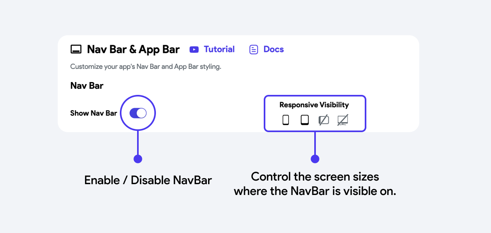

Frontend, API, backend, and database work together to complete a user task.
Our Stack
FlutterFlow builds the interface, while Supabase supports data and login.
Today, we turn an app idea into a clear plan before building.
01Essential Foundations Refresh
Apps Come in Different Forms
Where apps live
Mobile for phones and tablets
Web inside a browser
Desktop on a computer
Why cross-platform?
One project can serve more than one device. FlutterFlow helps us build for mobile and web without starting from zero for each platform.
Your requirements must match the device and people who will use the app.
01Essential Foundations Refresh
One User Action, Many App Parts
👤UserStarts a task
→Tap
📱FrontendScreens and buttons
→Request
↔APICarries information
→Process
⚙️BackendRules and logic
→Store
🗄️DatabasePersistent data
A requirement tells us what should happen through this flow. A user story tells us who starts it, what they do, and why.
01Essential Foundations Refresh
An API Carries Requests and Responses
👆TapUser submits an action
→Event
📤RequestSends the needed data
→API
✅Check + ProcessBackend validates and acts
→Return
📥ResponseSuccess, data, or error
→Render
✨Screen UpdatesUser sees the result
Example: A student submits a lost-item form. The app sends the details, the backend saves them, then the API returns success so the app can show a confirmation.
01Essential Foundations Refresh
Our Tools Have Different Jobs
🎨
FlutterFlow
Build screens, navigation, and interactions visually.
🔐
Supabase
Manage sign-in, data, and backend services.
🧩
Dart
Supports the Flutter app and custom logic when needed.
Today, we are not building screens yet. We are deciding what the screens and data need to do first.
01Essential Foundations Refresh
Dart Gives a Flutter App Its Behavior
What Dart does
Controls conditions and calculations
Handles values, lists, and data logic
Lets a Flutter app react to user actions
What this means for us
FlutterFlow creates Flutter and Dart code behind the visual builder. You do not need to write Dart today, but knowing its role helps you understand custom actions later.
For now: plan the behavior clearly. Later: FlutterFlow and Dart turn that plan into working actions.
01Essential Foundations Refresh
Accounts to Prepare
FlutterFlow
Create and design your app screens. Sign in with a Google account.
Supabase
Store data, manage authentication, and power your backend. Create an account with your email and password.
Figma (Optional)
Use it to prepare web UI mockups before you build them in FlutterFlow.
This is the first setup reminder: use an email you can access, keep your login details safe, and prepare these accounts before the building sessions begin.
01Essential Foundations Refresh
A Great App Is More Than a Feature List
It must help people
Solves a real, clear problem
Fits the target user
Makes the main task simple
It must work well
Clear screens and navigation
Reliable data and useful feedback
Safe, respectful handling of users
These become your functional and non-functional requirements today.
01Essential Foundations Refresh
The App Development Cycle
Plan
→
Design
→
Build
→
Test
→
Improve
↻
Today = Plan. We turn your problem into users, requirements, screens, and a user flow before the build starts.
01Learning Outcomes
By the End, You Should Understand:
How a clear problem statement guides the app plan
How target users and personas shape requirements
How user stories connect a user, an action, and a benefit
The difference between functional and non-functional requirements
How screen lists and user flows describe the app structure
How MVP and MoSCoW keep the project realistic
02Fundamentals
Why Plan Before Building?
❌ Without Planning
Build random features
Forget important screens
Rebuild things 3x
Confusing user experience
Miss deadlines
✅ With Planning
Clear build order
Nothing gets missed
Build once, build right
Smooth user journey
Finish on time
02The Planning Chain
Each planning artifact should connect to the next
Problem → identifies the need Target user → identifies who has the need User story → describes the user's goal Requirement → states what the app must support Screen + flow → shows where and how it happens
If a feature cannot be traced back to a real user need, it may not belong in the first version.
02Core Concept
What Are Requirements?
Requirements = A clear list of what your app MUST do and how it should behave.
Think of it as a checklist before construction. A builder doesn't start without blueprints. You don't build an app without requirements.
Two types: Functional (what it does) and Non-functional (how it performs)
02Functional Requirements
Functional = What It Does
Specific features and actions the app must perform:
Users can register with email and password
Users can post a lost item with photo and description
Users can search items by category
Users can claim a found item
Admin can delete inappropriate posts
02Non-Functional Requirements
Non-Functional = How It Behaves
Quality attributes and constraints:
Performance: Pages load within 3 seconds
Security: Passwords are encrypted, data is protected
Usability: Any user can complete core task in in 5 clicks or fewer
Compatibility: Works in modern browsers on laptop and phone
Availability: App accessible 24/7
02Make It Testable
Strong requirements can be checked
Too vague
"The app should be fast."
There is no agreed meaning of fast, so the team cannot reliably test it.
Measurable
"The item list should load within three seconds on a stable connection."
The condition and expected result are clear enough to verify.
Useful test: could someone decide pass or fail from this sentence?
02Comparison
Side by Side
Functional
Non-Functional
User can log in
Login takes 2 seconds
User can upload photo
Max file size 5MB
App sends notifications
Notifications arrive within 10s
User can search items
Search results load in 1s
Admin can ban users
Only admin role can access admin panel
Functional = the WHAT. Non-functional = the HOW WELL.
03Know Your Users
Who Will Use Your App?
Before you write requirements, you need to know WHO you're building for. Different users have different needs.
Questions to Ask:
Who has this problem?
How old are they?
Are they tech-savvy?
What device do they use?
User Types:
Primary user (main target)
Secondary user (occasional)
Admin (manages the app)
03User Persona
Create a Persona
Example: Campus Lost & Found App
Name
Maria, 20 years old
Role
College student (3rd year BSIT)
Device
Laptop and Android phone, uses Chrome
Tech Level
Average (uses social media daily)
Pain Point
Lost her calculator, doesn't know where to report
Goal
Quickly report lost item and get notified when found
04User Stories
What Are User Stories?
A user story describes a feature from the USER's perspective:
As a [type of user],
I want to [do something],
So that [I get some benefit].
This format forces you to think about WHO, WHAT, and WHY for every feature.
04Examples
User Story Examples
As a student, I want to post a lost item with a photo, so that others can help me find it.
As a student, I want to browse found items by category, so that I can quickly find my item.
As a student, I want to receive a notification when my item is found, so that I don't have to keep checking.
As an admin, I want to remove fake or inappropriate posts, so that the platform stays trustworthy.
04Best Practices
Good vs Bad Stories
❌ Bad
"The app should have a database"
"Make it look nice"
"Users can do stuff"
"Add a button"
Too vague, too technical, or no user perspective
✅ Good
"As a user, I want to filter by date so I find recent items"
"As a user, I want to see item photos so I can identify mine"
"As admin, I want to view reports so I can take action"
Specific, user-focused, has clear benefit
05Screen Identification
Stories → Screens
Every user story implies one or more screens. Let's extract them:
User Story
Implied Screen(s)
"I want to register"
Registration Page, Email Verification
"I want to post a lost item"
Create Post Form, Camera/Upload
"I want to browse items"
Item List Page, Filter/Search
"I want to see item details"
Item Detail Page
"I want to manage my profile"
Profile Page, Edit Profile
05Screen Patterns
Common App Screens
🔐
Login/Register
🏠
Home/Dashboard
📋
List View
📄
Detail View
📝
Form/Create
👤
Profile
⚙️
Settings
🔍
Search
🔔
Notifications
05Example
Screen List: Lost & Found App
Student Screens:
1. Splash / Onboarding
2. Login
3. Register
4. Home (Feed of items)
5. Post Lost Item (Form)
6. Post Found Item (Form)
7. Item Detail
8. My Posts
9. Profile
10. Notifications
Admin Screens:
11. Admin Dashboard
12. Manage Reports
13. User Management
Shared:
14. Search / Filter
15. Settings
06User Flow
What is a User Flow?
A user flow maps the path a user takes through the app to complete one task.
Start: where the task begins
Actions: screens and taps
Decisions: branches and errors
End: the completed outcome
FlutterFlow · Storyboard
A real builder view turns screen connections into a navigation map.Official documentation
06Notation
Flow Diagram Symbols
Symbol
Shape
Meaning
⬭
Rounded Rectangle
Start / End point
▭
Rectangle
Screen / Page / Action
◇
Diamond
Decision (Yes/No)
→
Arrow
Flow direction
▢
Dotted Rectangle
Optional / Conditional screen
You can draw these by hand or use tools like draw.io, Figma, or even pen and paper.
06Example Flow
Login Flow
06Full Example
Post Lost Item Flow
06Complete the Flow
Plan the happy path, alternatives, and errors
Happy path
The expected route when the user's information is valid and the task succeeds.
Alternative path
A valid different choice, such as browsing as a guest or choosing another category.
Error path
What happens when data is missing, credentials are wrong, or a request fails.
Every decision diamond should lead somewhere useful: continue, correct the problem, retry, or safely cancel.
07Flow Types
Linear vs Branching
Linear Flow
Step 1 → Step 2 → Step 3 → Done
Example: Onboarding screens, checkout process
Simple, predictable, easy to build
Branching Flow
Decision → Path A OR Path B → Merge
Example: Login (success vs error), Role-based (admin vs user)
Complex, realistic, handles edge cases
07Navigation
Navigation Patterns
⌄
Top Bar / Sidebar
Keeps Home, Browse, My Items, and Profile visible as primary web destinations.
☰
Drawer
Reveals a side menu when the app has many destinations or secondary tools.
▱
Navigation Stack
Opens detail pages on top of the current page; Back returns to the previous route.
FlutterFlow · Nav Bar settings

Navigation choices are configured, previewed, and tested before release.Official documentation
07Key Pattern
CRUD Flow Pattern
Almost every app is CRUD at its core:
C
Create → Form screen → Submit → Save to database
R
Read → List screen → Load data → Display
U
Update → Edit form → Save changes → Confirm
D
Delete → Confirm dialog → Remove → Refresh list
Your app will definitely have at least one CRUD feature. Most have several.
08Scope
What is MVP?
Minimum Viable Product = The simplest version of your app that still works and delivers value.
It's NOT the final product. It's the FIRST version that you can test with real users.
For this course, your MVP should have: Login + 1 main CRUD feature + basic navigation. Everything else is enhancement.
08Prioritization
What's In vs What's Out
✅ MVP (Must Have)
User registration / login
Core CRUD feature
Basic navigation
View list and details
Simple, clean UI
⏳ Nice to Have (Later)
Push notifications
Chat/messaging
Advanced search/filter
Dark mode
Social sharing
08Framework
MoSCoW Method
Priority
Meaning
Example
Must Have
App doesn't work without it
Login, main feature
Should Have
Important but not critical
Profile edit, search
Could Have
Nice bonus if time permits
Notifications, themes
Won't Have
Out of scope for now
Payment, chat, AI
Categorize ALL your features using this. Be honest about what's realistic in 18 weeks.
08A Practical Decision Rule
A Must Have protects the app's core value
Ask: If this feature is missing, can the target user still complete the app's main task?
No → it is probably a Must Have.
Yes, but the experience is weaker → it may be a Should Have.
Yes, with little impact → it is likely a Could Have.
Not realistic this semester → place it under Won't Have for now.
Prioritization is a scope decision, not a judgment that an idea is permanently unimportant.
09Documentation
Our Shared Project Requirements
1. Shared Project Scope & Problem Statement (Campus Lost & Found) 2. Campus Users (student and administrator personas) 3. User Stories (5-8 minimum) 4. Functional Requirements (feature list) 5. Non-Functional Requirements (quality attributes) 6. Screen List (all pages/screens) 7. User Flow Diagram (navigation map) 8. MoSCoW Prioritization (what's in MVP)
This is the guided class project for Prelim, Midterm, and Semifinal. The independent project will be assigned only after the shared app is complete.
10Recap
What We Covered
Requirements = what your app must do (functional + non-functional)
User Stories = features from the user's perspective
Screen List = all pages your app needs
User Flow = how users navigate through your app
MVP = simplest working version first
MoSCoW = prioritize what matters
Coming Up
UI/UX Basics for Beginners
The next lesson introduces design principles that make app interfaces clearer, easier to use, and more consistent.
We will connect the requirements and screen list from this session to visual design decisions.